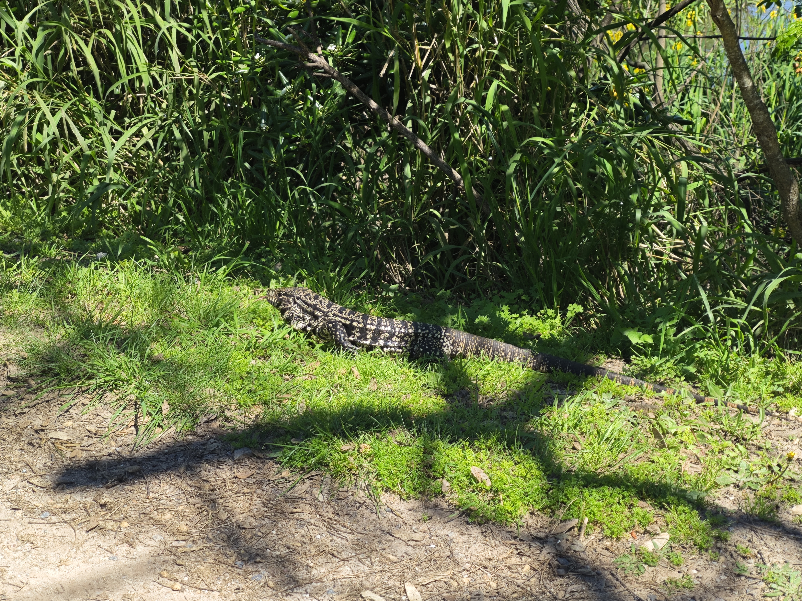
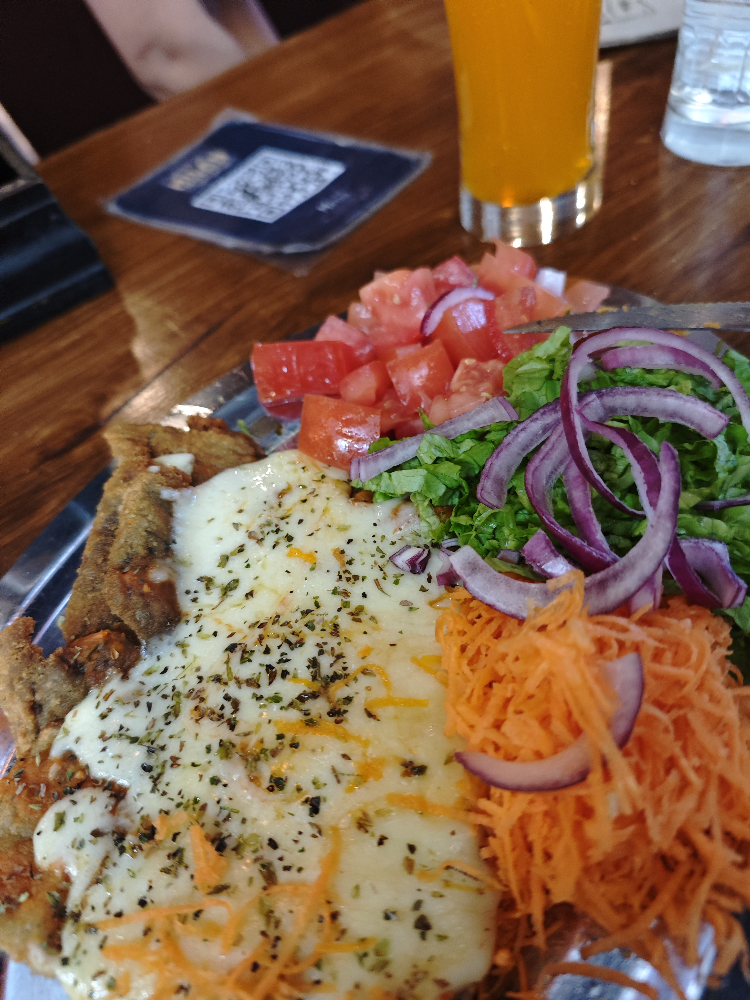
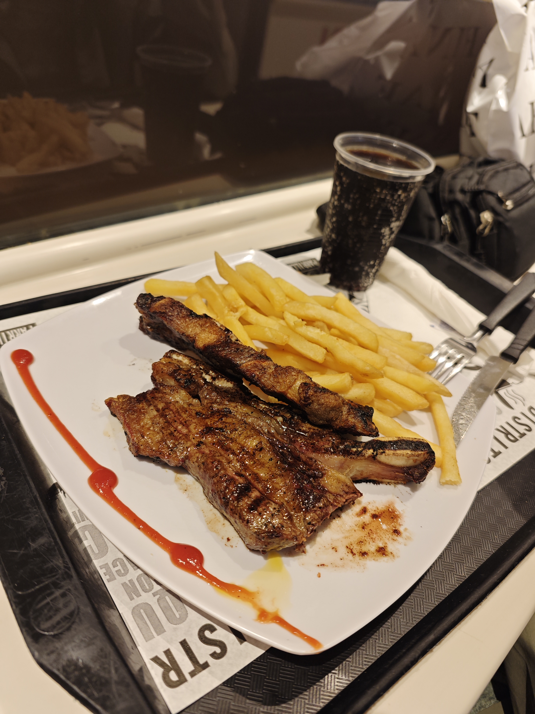
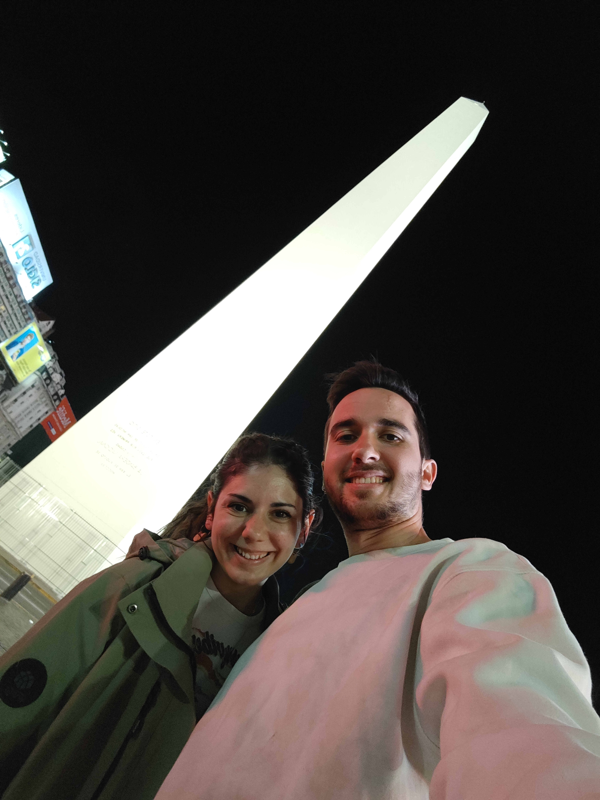

Decidimos dedicar este día a otro paseo libre por Buenos Aires. Comenzamos caminando hasta la Casa Rosada y desde allí continuamos andando hasta Puerto Madero, el renovado distrito de la ciudad. En el camino, cruzamos el famoso Puente de la Mujer, una estructura icónica del lugar.
� Caminata Urbana: Casa Rosada a Puerto Madero
🦎 Descubrimiento del Ecoparque
Buscábamos llegar a un ecoparque en la zona de Puerto Madero. Las calles estaban desiertas y parecía cerrado, pero cuando preguntamos nos dijeron que se entraba más al fondo. ¡Fue una grata sorpresa! El parque resultó ser inmenso y lleno de vida.
Poco después de entrar, vimos una tortuga acuática caminando por el paseo cruzando el camino. Luego nos encontramos con un lagarto enorme que nos dejó sin palabras. Pasamos toda la mañana explorando el ecoparque, descubriendo la riqueza natural que Buenos Aires albergaba.
🦎 Encuentros Inesperados
La tortuga acuática cruzando tranquilamente por el paseo fue un momento mágico. El lagarto grande que encontramos era prácticamente tan largo como una persona. Estos encuentros con la fauna local nos recordaron que incluso en una gran ciudad como Buenos Aires, la naturaleza tiene espacio para prosperar.

🦎 El lagarto del Ecoparque de Puerto Madero
☕ Mercado de San Telmo: Gastronomía Local
Desde el ecoparque nos dirigimos andando hacia el Mercado de San Telmo, una zona vibrante de la ciudad. Allí comimos en un sitio especializado en milanesas. Yo pedí una milanesa con queso y ensalada, mientras que María optó por las famosas "patatas a caballo" (patatas con un huevo frito encima).
Sin embargo, las patatas de María tenían un sabor peculiar: parecía que se habían frito en aceite de calamares. Ambos platos no fueron excepcionales, resultando ser una experiencia gastronómica mediocre.
🍽️ Almuerzo en el Mercado de San Telmo
Plato de Cristian: Milanesa con queso y ensalada
Plato de María: Patatas a caballo (patatas con huevo frito)
Problema de María: Aceite de calamares (probablemente)
Veredicto: No muy buenos

🍽️ Milanesa de san telmo
⚠️ Un Incidente Incómodo
Mientras comíamos en San Telmo, sucedió algo desagradable. Una mujer mayor encorvada se acercó pidiendo dinero con un papel escrito. Cuando le dijimos que no, reaccionó de forma muy brusca: nos quitó el papel con un gesto muy violento y luego miró a María diciendo "rata" con una expresión muy hostil. Fue un momento incómodo que nos sorprendió por su agresividad.
😟 Momentos Difíciles en la Ciudad
Este encuentro nos recordó que incluso en ciudades hermosas hay situaciones incómodas. La agresividad de la mujer fue inesperada, pero decidimos no dejar que un solo incidente arruinara nuestro día. Buenos Aires tiene muchísimo que ofrecer, y esta fue solo una pequeña mancha en un lienzo de experiencias.
💰 Calle Florida: Comercio Intenso
Nos dirigimos a la Calle Florida, la principal avenida comercial de Buenos Aires. Lo que nos sorprendió fue la anormal cantidad de personas ofreciendo cambiar dinero en las calles. Todos gritaban "¡cambio, cambio!" sin parar, creando un ambiente caótico pero típicamente porteño.
Además, vimos muchas niñas pequeñas sentadas en el suelo con cachorros de perro pidiendo dinero en cartones. Nos imaginamos que probablemente se trataba de operaciones de mafias, lo cual fue deprimente. A pesar de ello, la calle estaba llena de tiendas y vida comercial.
Yo me compré una camiseta en una tienda, y María se llevó unos pantalones y un cinturón. Fueron buenas adquisiciones para nuestro viaje.
🛍️ Compras en Calle Florida
Cristian: 1 camiseta
María: Pantalones + cinturón
Observación: Calle caótica pero llena de tiendas
Nota especial: Muchos cambistas callejeros gritando "cambio, cambio"
☕ Galerías Pacífico: Café y Tiendas
Nos dirigimos a Galerías Pacífico, el centro comercial más emblemático de Buenos Aires, ubicado en el edificio histórico de la ciudad. Allí estuvimos mirando tiendas y decidimos tomarnos un café para descansar.
Probé una limonada con menta y jengibre, una bebida que se consumía mucho en Argentina. Sin embargo, no me gustó mucho. María disfrutó de su café con más entusiasmo. Galerías Pacífico es un lugar hermoso que mezcla la arquitectura histórica con la modernidad del comercio actual.
☕ Pausa en Galerías Pacífico
Bebida de Cristian: Limonada con menta y jengibre (no le gustó)
Bebida de María: Café
Ubicación: Centro histórico y comercial de Buenos Aires
Nota: Lugar hermoso pero bebidas mediocres
🍽️ Cena: Una Aventura Culinaria Imperfecta
Decidimos cenar también en Galerías Pacífico. María pidió un churrasco en un restaurante que tenía buena pinta. Desafortunadamente, resultó estar muy seco e insípido, una verdadera decepción para un plato que debería haber sido jugoso y sabroso.
Cuando vimos el resultado del churrasco, decidimos pedir unos spaguetis en otro restaurante para mejorar nuestra mala decisión. Los spaguetis no estaban malísimos, pero era todo lo que podíamos decir. No eran buenos, simplemente... estaban ahí. Fue una cena que claramente nos mostró que no todos los días tienen momentos gastronómicos gloriosos.
🍽️ La Lección de la Cena
El churrasco seco fue una lección sobre tener expectativas más realistas. Los spaguetis "no malísimos" se convirtieron en nuestro plan B, salvando la cena de ser completamente desastrosa. En viajes así, no siempre ganamos en la mesa, pero cada experiencia nos enseña algo.
🍽️ Cena en Galerías Pacífico
Plato de María: Churrasco (muy seco e insípido)
Plato de Cristian: Spaguetis (plan B, "no malísimos")
Veredicto: Cena para olvidar
Lección aprendida: No siempre la experiencia es gloriosa

🍽️ Nuestra cena de resultados mixtos en Galerías Pacífico
🏨 Caminata de Regreso
Después de la cena, decidimos regresar al hotel caminando. Fue una forma tranquila de terminar un día lleno de aventuras, descubrimientos y algunas decepciones. Aunque no todas las experiencias gastronómicas fueron perfectas, el día fue rico en experiencias urbanas, encuentros con la fauna local y la vibrante vida callejera de Buenos Aires.

🌆 El Obelisco de noche - Un ícono iluminado de Buenos Aires
"Cada viaje mezcla lo inesperado y lo cotidiano. El Día 10 nos regaló naturaleza en medio de la ciudad, encuentros sorprendentes y lecciones gastronómicas. Cerramos la jornada con la sensación de haber explorado Buenos Aires desde su lado más vivo y complejo." ✨🦎